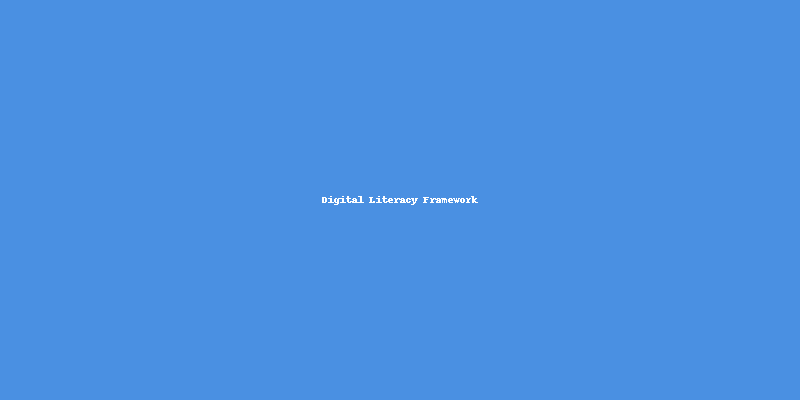
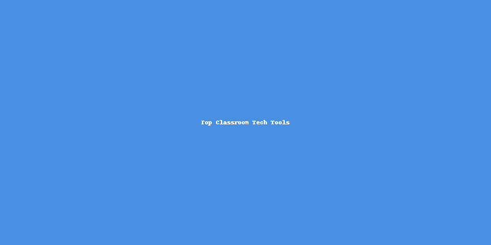
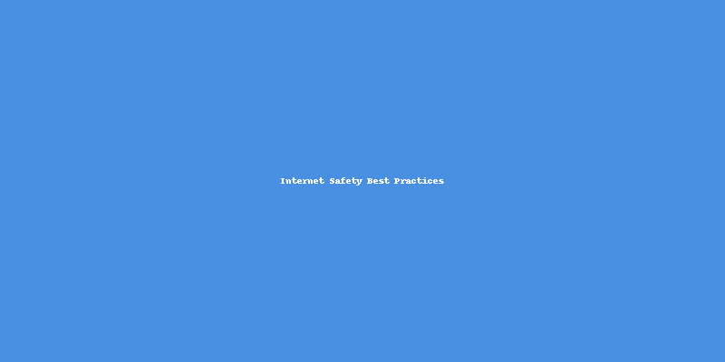

Enhancing Digital Literacy and Classroom Engagement
This self-paced course is designed for Keller ISD middle school teachers to build digital literacy and enhance classroom engagement using modern technology tools. Each module includes activities, assessments, and multimedia to ensure skill development and retention.
Understand what digital literacy means for today’s classrooms. Explore essential skills, frameworks, and best practices.
Alternate video:
Quick Quiz: What is one key component of digital literacy?
Learn about top tech tools like Google Workspace, Edpuzzle, Flip, and Padlet. Discover how to integrate them into lesson plans effectively.
Alternate video:
Scenario Practice: Choose the best tool to promote student collaboration:
Explore cybersecurity basics, safe browsing habits, and strategies to model responsible technology use for students.
Quick Quiz: What’s the best first step to prevent phishing scams?
Create a mini-lesson plan using at least one new digital tool learned in this course. Submit your project for peer feedback!
Mini Reflection: What tool are you most excited to use?